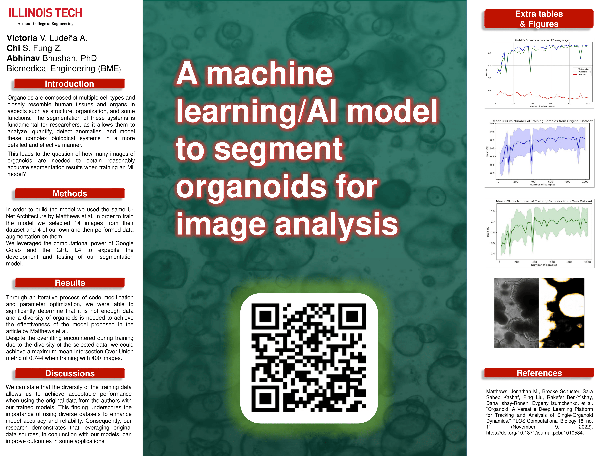

Members
Chi Fung
Victoria Ludeña
Ahbinav Bhushan, PhD
Presentation Poster
Additional content
Segmentation Comparison

References
- Matthews, Jonathan M., Brooke Schuster, Sara Saheb Kashaf, Ping Liu, Rakefet Ben-Yishay, Dana Ishay-Ronen, Evgeny Izumchenko, et al. “Organoid: A Versatile Deep Learning Platform for Tracking and Analysis of Single-Organoid Dynamics.” PLOS Computational Biology 18, no. 11 (November 9, 2022). https://doi.org/10.1371/journal.pcbi.1010584.